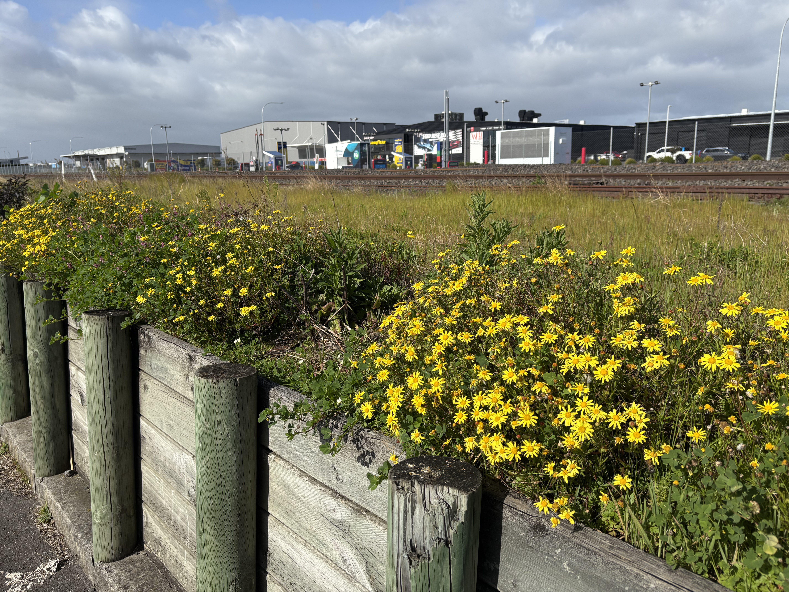
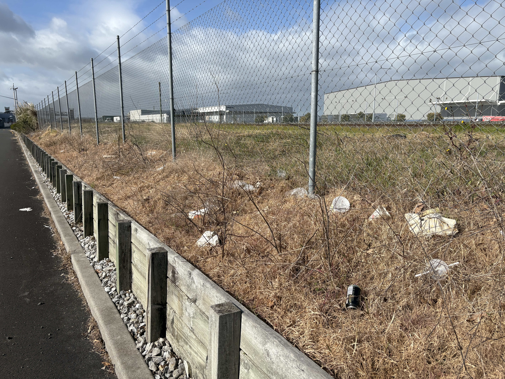

No Flowers = No Food
Plant native • Mow less (smarter) • Stop spraying • Keep corners wild
The world is in a biodiversity crisis.
Insects are disappearing, and without them, we risk losing our food.
Even small patches of flowers in gardens, schools, or streets make a big difference.
Come in action today!
What you can do
Grow Native Plants
Hebe (koromiko), Mānuka, Olearia
Mow Grass Less
2–3×/year, leave ~30% long, avoid Oct–Jan
Stop Spraying
Weed by hand, use mulch, or plant densely
Make Shelter Spaces
Leave leaf litter, twigs, and logs for nesting

